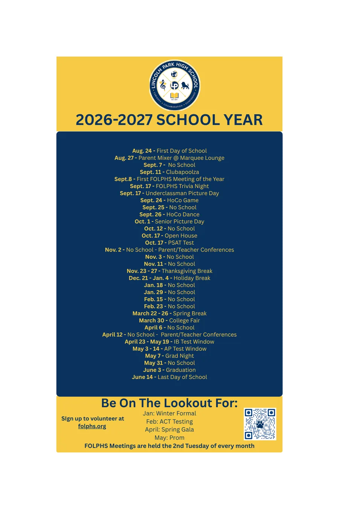

Upcoming events
2026-27 School Year
Key LPHS dates for families, plus FOLPHS events. Meetings are held the 2nd Tuesday of every month.
Calendar
- Aug. 24First Day of School
- Aug. 27Parent Mixer @ Marquee Lounge
- Sept. 7No School
- Sept. 8First FOLPHS Meeting of the Year
- Sept. 11Clubapoolza
- Sept. 17FOLPHS Trivia Night
- Sept. 17Underclassman Picture Day
- Sept. 24HoCo Game
- Sept. 25No School
- Sept. 26HoCo Dance
- Oct. 1Senior Picture Day
- Oct. 12No School
- Oct. 17Open House
- Oct. 17PSAT Test
- Nov. 2No School, Parent/Teacher Conferences
- Nov. 3No School
- Nov. 11No School
- Nov. 23-27Thanksgiving Break
- Dec. 21-Jan. 4Holiday Break
- Jan. 18No School
- Jan. 29No School
- Feb. 15No School
- Feb. 23No School
- March 22-26Spring Break
- March 30College Fair
- April 6No School
- April 12No School, Parent/Teacher Conferences
- April 23-May 19IB Test Window
- May 3-14AP Test Window
- May 7Grad Night
- May 31No School
- June 3Graduation
- June 14Last Day of School
Be on the lookout for: Winter Formal in January, ACT Testing in February, the Spring Gala in April and Prom in May.

The 2026-27 calendar magnet. Open full size

Monthly coffee
Coffee with the Principal
Sign up to have coffee with LPHS Principal Dr. Steinmiller. Spots are limited each month, so reserve yours early.